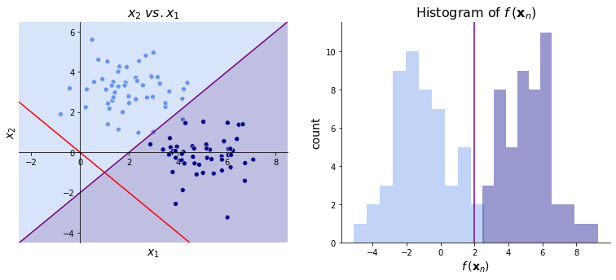

Fisher’s Linear Discriminant¶
Intuitively, a good classifier is one that bunches together observations in the same class and separates observations between classes. Fisher’s linear discriminant attempts to do this through dimensionality reduction. Specifically, it projects data points onto a single dimension and classifies them according to their location along this dimension. As we will see, its goal is to find the projection that that maximizes the ratio of between-class variation to within-class variation. Fisher’s linear discriminant can be applied to multiclass tasks, but we’ll only review the binary case here.
Model Structure¶
As usual, suppose we have a vector of one or more predictors per observation, \(\bx_n\). However we do not append a 1 to this vector. I.e., there is no bias term built into the vector of predictors. Then, we can project \(\mathbf{x}_n\) to one dimension with
Once we’ve chosen our \(\bbeta\), we can classify observation \(n\) according to whether \(f(\bx_n)\) is greater than some cutoff value. For instance, consider the data on the left below. Given the vector \(\bbeta ^\top= \begin{bmatrix} 1 &-1 \end{bmatrix}\) (shown in red), we could classify observations as dark blue if \(\bbeta^\top \bx_n \geq 2\) and light blue otherwise. The image on the right shows the projections using \(\bbeta\). Using the cutoff \(\bbeta^\top \bx_n \geq 2\), we see that most cases are correctly classified though some are misclassified. We can improve the model in two ways: either changing \(\bbeta\) or changing the cutoff.

In practice, the linear discriminant will tell us \(\bbeta\) but won’t tell us the cutoff value. Instead, the discriminant will rank the \(f(\bx_n)\) so that the classes are separated as much as possible. It is up to us to choose the cutoff value.
Fisher Criterion¶
The Fisher criterion quantifies how well a parameter vector \(\bbeta\) classifies observations by rewarding between-class variation and penalizing within-class variation. The only variation it considers, however, is in the single dimension we project along. For each observation, we have
Let \(N_k\) be the number of observations and \(\mathcal{S}_k\) be the set of observations in class \(k\) for \(k \in \{0, 1\}\). Then let
be the mean vector (also known as the centroid) of the predictors in class \(k\). This class-mean is also projected along our single dimension with
A simple way to measure how well \(\bbeta\) separates classes is with the magnitude of the difference between \(\mu_2\) and \(\mu_1\). To assess similarity within a class, we use
the within-class sum of squared differences between the projections of the observations and the projection of the class-mean. We are then ready to introduce the Fisher criterion:
Intuitively, an increase in \(F(\bbeta)\) implies the between-class variation has increased relative to the within-class variation.
Let’s write \(F(\bbeta)\) as an explicit function of \(\bbeta\). Starting with the numerator, we have
where \(\bSigma_b = (\bmu_2 - \bmu_1)(\bmu_2 - \bmu_1)^\top\) is the between class covariance matrix. Then for the denominator, we have
where \(\bSigma_w = \sum_{n \in \mathcal{S}_1}(\bx_n - \bmu_1)(\bx_n - \bmu_1)^\top + \sum_{n \in \mathcal{S}_2}(\bx_n - \bmu_2)(\bx_n - \bmu_2)^\top\) is the within class covariance matrix. In total, then, we have
Parameter Estimation¶
Finally, we can find the \(\bbeta\) to optimize \(F(\bbeta)\). Importantly, note that the magnitude of \(\bbeta\) is unimportant since we simply want to rank the \(f(\bx_n) = \bbeta^\top \bx_n\) values and using a vector proportional to \(\bbeta\) will not change this ranking.
Math Note
For a symmetric matrix \(\mathbf{W}\) and a vector \(\mathbf{s}\), we have
Notice that \(\bSigma_w\) is symmetric since its \((i, j)^\text{th}\) element is
which is equivalent to its \((j, i)^\text{th}\) element.
By the quotient rule and the math note above,
We then set this equal to 0. Note that the denominator is just a scalar, so it goes away.
Since we only care about the direction of \(\bbeta\) and not its magnitude, we can make some simplifications. First, we can ignore \(\bbeta^\top \bSigma_b \bbeta\) and \(\bbeta^\top \bSigma_b \bbeta\) since they are just constants. Second, we can note that \(\bSigma_b \bbeta\) is proportional to \(\bmu_2 - \bmu_1\), as shown below:
where \(k\) is some constant. Therefore, our solution becomes
The image below on the left shows the \(\bbetahat\) (in red) found by Fisher’s linear discriminant. On the right, we again see the projections of these datapoints from \(\bbetahat\). The cutoff is chosen to be around 0.05. Note that this discriminator, unlike the one above, successfully separates the two classes!